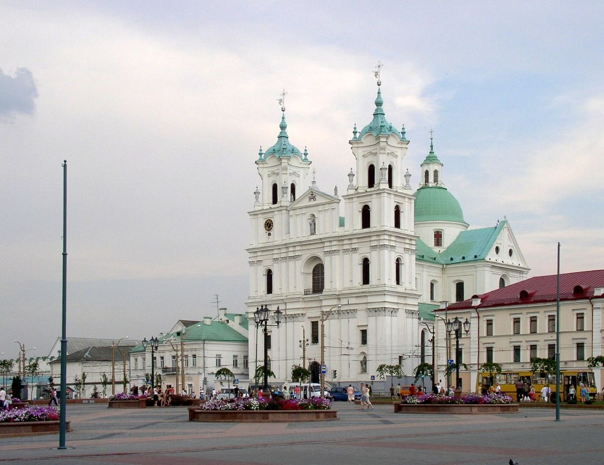

Гродно — один из старейших городов Беларуси, основанный в 1128 году. Он является административным центром Гродненской области и расположен на берегах реки Неман. Гродно известен своей богатой историей и культурным наследием, включая множество архитектурных памятников, таких как Старый и Новый замки, Коложская церковь и Кафедральный костёл Св. Франциска Ксаверия.
В середине XIII века Гродно вошел в состав Великого княжества Литовского. С 1569 года город стал частью Речи Посполитой. В Гродно сохранились два замка — Старый и Новый. Старый замок был построен в XI веке и служил резиденцией князей и королей. Новый замок был возведен в XVIII веке и использовался для королевских заседаний. Гродно был местом пересечения различных культур и религий. Здесь строились православные церкви, католические костелы и синагоги, что отражает многообразие населения города.
После третьего раздела Речи Посполитой 1795 году Гродно был присоединен к Российской империи и в 1801 году стал губернским городом. Гродно стал важным административным центром, что способствовало его экономическому и культурному развитию. В 1824-1839 годах был построен Августовский канал, который соединил реку Неман с Вислой, что способствовало развитию торговли.
В июне 1941 года немецкие войска оккупировали Гродно, принеся с собой разрушения и ужасы войны. Оккупация длилась более трех лет, вплоть до освобождения города Красной Армией в июле 1944 года. Во время оккупации в Гродно были созданы два еврейских гетто, в которых содержалось свыше 42000 евреев, большинство из которых были убиты или отправлены в концентрационные лагеря смерти. Город был разрушен на 43%, что затронуло не только жилые кварталы, но и промышленность — серьёзно пострадали фабрики и заводы. В результате войны численность населения Гродно сократилась наполовину, и город долго восстанавливался после этих трагических событий.
| Период в истории | Национальность | |
| До 1941 года | После | |
| 31% | 3% | Евреи |
| 54% | 81% | Беларусы |
| 14% | 6% | Поляки |